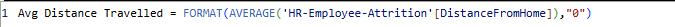

Introduction:
This project involved creating an interactive Power BI dashboard to analyze HR data and uncover insights on workforce composition, employee retention, and attrition patterns. The goal was to support data-driven HR decision-making by identifying workforce trends, high-risk segments, and key performance metrics.
Data Preparation:
- Data Loading:
The dataset is loaded into Power Query for further analysis.
- Data Quality Check:
Verified data types and ensured dataset was clean with no nulls or errors.
- Column Removal:
Removed unnecessary fields — Over18, StandardHours, and EmployeeCount — to optimize the model.
- Calculated Columns:
Created Distance Group (0–5 km, 6–10 km, 11–20 km, 20+ km) and Monthly Income Bins for segmented analysis.
Measures / KPIs:
DAX queries were used to calculate all KPIs and performance metrics.
- Total Employees: 1470
- Active Employees: 1233
- Average Tenure: 7 years
- Average Age: 37 years
- Average Salary: $6.50K
- Average Job Satisfaction: 2.73
- Average Environment Satisfaction: 2.73
- Average Distance Travelled: 9 km
- Attrition Rate: 16.12%
- Employees Left: 237
- Attrition by Department: HR – 19.05%, R&D – 13.84%, Sales – 20.63%
- Gender-wise Attrition: Male – 17.01%, Female – 14.08%

Dashboard Features
Pages:
Includes three interactive pages — Workforce Overview, Employee Retention, and Attrition Analysis — providing insights into employee demographics, retention patterns, and turnover behavior. A Drill-through page is added to view detailed employee-level information.
Dynamic Measures:
Created two dynamic DAX measures — Active Employees and Employees Left. These measures dynamically update the visuals:
- Employees by Age Group & Gender
- Employee Distribution Across Departments
This allows the same charts to switch between workforce count and attrition count with a single click.
Dynamic Titles:
Used DAX expressions to automatically update titles only for visuals linked to dynamic measures, ensuring clarity when switching between Active and Left employee metrics.
Slicers & Navigation:
Gender and Department slicers are placed inside a Filter Button using bookmarks for a clean, compact layout. A Clear Filters button is provided for quick resets.
Page navigation is done using custom icons, connected through bookmarks for smooth movement between dashboard pages.
Visual Design
- 1. Bar Chart (Monthly Income by Job Role)
- Shows the average salary across different job roles.
- 2. Donut Charts (Marital Status & Overtime)
- Highlight workforce distribution by marital status and show how many active employees work overtime.
- 3. Column Charts (Job Satisfaction, Performance Rating, Environment Satisfaction, Work-Life Balance)
- Provide employee feedback on job satisfaction, workplace environment, performance, and work–life balance.
- 4. Scatter Plot (Years at Company by Job Role)
- Displays the distribution of tenure across different job roles.
- 5. Matrix with Heatmap (Employees by Job Role & Attrition by Job Level)
- Shows employee distribution across job roles and visualizes attrition patterns by job level using heatmap formatting. The heatmap color intensity helps identify high-density or high-risk roles.
- 6. Area Charts (Employees by Distance Travelled & Attrition by Distance)
- Illustrate employee commuting distance and attrition distribution by distance travelled.
- 7. Line Chart with Trendline (Attrition by Age & Income)
- Shows attrition trends across different age groups and income ranges with a trendline.
- 8. Tree Map (Attrition by Job Role)
- Displays attrition distribution across job roles using a tree map layout.
- 9. Drill-through Table (Employee Details)
- Shows individual employee-level details such as tenure, department, salary, satisfaction metrics, and attrition status.
Results:
- 1. Workforce Composition:
- 46% of employees are married, 32% single, and 22% divorced. Most employees have a Life Sciences (41%) or Medical (32%) background, highlighting the workforce’s educational focus.
- 2. Employee Distribution:
- Most active employees are aged 55+, while the highest number of employees leaving are also in 55+ and 26–35 age groups. R&D has the highest number of active employees and attrition, followed by Sales; HR has the lowest.
- 3. Compensation & Tenure:
- Sales Executives earn the highest monthly income, Managers have the longest tenure (14.4 years), and Sales Representatives have the shortest tenure (2.9 years).
- 4. Work Patterns:
- 77% of active employees do not work overtime. Most active employees have average environment satisfaction and work-life balance ratings of 3–4. The majority of employees live within 0–5 km of the workplace.
- 5. Attrition Trends:
- Overall attrition rate is 16.12%. Highest attrition is in the under-20 age group (67%) and among Sales Representatives (40%). Employees commuting 20+ km have higher attrition (22%). High attrition is also observed in certain HR and Laboratory Technician roles.
- Tools Power BI, Power Query, DAX
- Stages Data Preparation Measure/KPIs Visual Design Insights & Results
- Go to Github!
Click on image to view the project